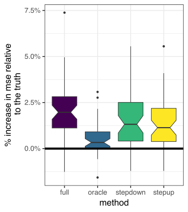

07 practical model/variable selection
Stat 406
Geoff Pleiss, Trevor Campbell
Last modified – 25 September 2024
\[ \DeclareMathOperator*{\argmin}{argmin} \DeclareMathOperator*{\argmax}{argmax} \DeclareMathOperator*{\minimize}{minimize} \DeclareMathOperator*{\maximize}{maximize} \DeclareMathOperator*{\find}{find} \DeclareMathOperator{\st}{subject\,\,to} \newcommand{\E}{E} \newcommand{\Expect}[1]{\E\left[ #1 \right]} \newcommand{\Var}[1]{\mathrm{Var}\left[ #1 \right]} \newcommand{\Cov}[2]{\mathrm{Cov}\left[#1,\ #2\right]} \newcommand{\given}{\ \vert\ } \newcommand{\X}{\mathbf{X}} \newcommand{\x}{\mathbf{x}} \newcommand{\y}{\mathbf{y}} \newcommand{\P}{\mathcal{P}} \newcommand{\R}{\mathbb{R}} \newcommand{\norm}[1]{\left\lVert #1 \right\rVert} \newcommand{\snorm}[1]{\lVert #1 \rVert} \newcommand{\tr}[1]{\mbox{tr}(#1)} \newcommand{\brt}{\widehat{\beta}^R_{s}} \newcommand{\brl}{\widehat{\beta}^R_{\lambda}} \newcommand{\bls}{\widehat{\beta}_{ols}} \newcommand{\blt}{\widehat{\beta}^L_{s}} \newcommand{\bll}{\widehat{\beta}^L_{\lambda}} \newcommand{\U}{\mathbf{U}} \newcommand{\D}{\mathbf{D}} \newcommand{\V}{\mathbf{V}} \]
Model Selection
Model Selection means select the best distributions to describe your data.
(I.e. the model with the smallest risk \(R_n\).)
The procedure
- Generate a list of (comparable) candidate models (\(\mathcal M = \{ \mathcal P_1, \mathcal P_2, \ldots \}\))
- Choose a procedure for estimating risk (e.g. \(C_p\))
- Train each model and estimate its risk
- Choose the model with the lowest risk (e.g. \(\argmin_{\mathcal P \in \mathcal M} C_p(\mathcal P)\))
Example
The truth:
Model 1: y ~ x1 + x2
Model 2: y ~ x1 + x2 + x1*x2
Model 3: y ~ x2 + sin(x1 * x2)
The models above are written in short hand. In full statistical glory…
\[ \text{Model 1} = \left\{ Y|X \sim \mathcal N\left( \:( \beta_0 + \beta_1 X^{(1)} + \beta_2X^{(2)}), \: \sigma^2 \right) \quad \text{for some } \beta_0, \beta_1, \beta_2, \sigma \right\} \]
Fit each model and estimate \(R_n\)
forms <- list("y ~ x1 + x2", "y ~ x1 * x2", "y ~ x2 + sin(x1*x2)") |>
map(as.formula)
fits <- map(forms, ~ lm(.x, data = dat))
map(fits, ~ tibble(
R2 = summary(.x)$r.sq,
training_error = mean(residuals(.x)^2),
loocv = mean( (residuals(.x) / (1 - hatvalues(.x)))^2 ),
AIC = AIC(.x),
BIC = BIC(.x)
)) |> list_rbind()# A tibble: 3 × 5
R2 training_error loocv AIC BIC
<dbl> <dbl> <dbl> <dbl> <dbl>
1 0.589 21.3 22.9 598. 608.
2 0.595 21.0 23.4 598. 611.
3 0.586 21.4 23.0 598. 609.Model Selection vs. Variable Selection
Variable selection is a subset of model selection.
Assume we have 2 predictors (
x1,x2) and we’re trying to choose which to include in a linear regressor:Model 1:
y ~ x1(i.e. \(\left\{ Y|X \sim \mathcal N\left( \:( \beta_0 + \beta_1 X^{(1)} ), \: \sigma^2 \right) \right\}\))
Model 2:y ~ x2(i.e. \(\left\{ Y|X \sim \mathcal N\left( \:( \beta_0 + \beta_1X^{(2)}), \: \sigma^2 \right) \right\}\))
Model 3:y ~ x1 + x2(i.e. \(\left\{ Y|X \sim \mathcal N\left( \:( \beta_0 + \beta_1 X^{(1)} + \beta_2X^{(2)}), \: \sigma^2 \right) \right\}\))
Choosing which predictors to include is implicitly selecting a model.
Note
Note that \(\mathrm{Model 1}, \mathrm{Model 2} \subset \mathrm{Model 3}\)
We say that these models are nested.
Selecting variables / predictors with linear methods
Suppose we have a set of predictors.
We estimate models with different subsets of predictors and use CV / Cp / AIC / BIC to decide which is preferred.
How do we choose which variable subsets to consider?
- All subsets
- estimate model based on every possible subset of size \(|\mathcal{S}| \leq \min\{n, p\}\), use one with lowest risk estimate
- Forward selection
- start with \(\mathcal{S}=\varnothing\), add predictors greedily
- Backward selection
- start with \(\mathcal{S}=\{1,\ldots,p\}\), remove greedily
- Hybrid
- combine forward and backward smartly
Caution
Within each procedure, we’re comparing nested models. This is important.
Costs and benefits
- All subsets
-
👍 estimates each subset
💣 takes \(2^p\) model fits when \(p<n\). If \(p=50\), this is about \(10^{15}\) models.
- Forward selection
-
👍 computationally feasible
💣 ignores some models, correlated predictors means bad performance - Backward selection
-
👍 computationally feasible
💣 ignores some models, correlated predictors means bad performance
💣 doesn’t work if \(p>n\)
- Hybrid
-
👍 visits more models than forward/backward
💣 slower
Synthetic example
set.seed(123)
n <- 406
df <- tibble( # like data.frame, but columns can be functions of preceding
x1 = rnorm(n),
x2 = rnorm(n, mean = 2, sd = 1),
x3 = rexp(n, rate = 1),
x4 = x2 + rnorm(n, sd = .1), # correlated with x2
x5 = x1 + rnorm(n, sd = .1), # correlated with x1
x6 = x1 - x2 + rnorm(n, sd = .1), # correlated with x2 and x1 (and others)
x7 = x1 + x3 + rnorm(n, sd = .1), # correlated with x1 and x3 (and others)
y = x1 * 3 + x2 / 3 + rnorm(n, sd = 2.2) # function of x1 and x2 only
)\(\mathbf{x}_1\) and \(\mathbf{x}_2\) are the true predictors
But the rest are correlated with them
Full model
Call:
lm(formula = y ~ ., data = df)
Residuals:
Min 1Q Median 3Q Max
-6.7739 -1.4283 -0.0929 1.4257 7.5869
Coefficients:
Estimate Std. Error t value Pr(>|t|)
(Intercept) 0.03383 0.27700 0.122 0.90287
x1 6.70481 2.06743 3.243 0.00128 **
x2 -0.43945 1.71650 -0.256 0.79807
x3 1.37293 1.11524 1.231 0.21903
x4 -1.19911 1.17850 -1.017 0.30954
x5 -0.53918 1.07089 -0.503 0.61490
x6 -1.88547 1.21652 -1.550 0.12196
x7 -1.25245 1.10743 -1.131 0.25876
---
Signif. codes: 0 '***' 0.001 '**' 0.01 '*' 0.05 '.' 0.1 ' ' 1
Residual standard error: 2.231 on 398 degrees of freedom
Multiple R-squared: 0.6411, Adjusted R-squared: 0.6347
F-statistic: 101.5 on 7 and 398 DF, p-value: < 2.2e-16True model
Call:
lm(formula = y ~ x1 + x2, data = df)
Residuals:
Min 1Q Median 3Q Max
-6.4519 -1.3873 -0.1941 1.3498 7.5533
Coefficients:
Estimate Std. Error t value Pr(>|t|)
(Intercept) 0.1676 0.2492 0.673 0.5015
x1 3.0316 0.1146 26.447 <2e-16 ***
x2 0.2447 0.1109 2.207 0.0279 *
---
Signif. codes: 0 '***' 0.001 '**' 0.01 '*' 0.05 '.' 0.1 ' ' 1
Residual standard error: 2.233 on 403 degrees of freedom
Multiple R-squared: 0.6357, Adjusted R-squared: 0.6339
F-statistic: 351.6 on 2 and 403 DF, p-value: < 2.2e-16All subsets
Subset selection object
Call: regsubsets.formula(y ~ ., data = df)
7 Variables (and intercept)
Forced in Forced out
x1 FALSE FALSE
x2 FALSE FALSE
x3 FALSE FALSE
x4 FALSE FALSE
x5 FALSE FALSE
x6 FALSE FALSE
x7 FALSE FALSE
1 subsets of each size up to 7
Selection Algorithm: exhaustive
x1 x2 x3 x4 x5 x6 x7
1 ( 1 ) "*" " " " " " " " " " " " "
2 ( 1 ) "*" " " " " " " " " "*" " "
3 ( 1 ) "*" " " " " "*" " " "*" " "
4 ( 1 ) "*" " " "*" "*" " " "*" " "
5 ( 1 ) "*" " " "*" "*" " " "*" "*"
6 ( 1 ) "*" " " "*" "*" "*" "*" "*"
7 ( 1 ) "*" "*" "*" "*" "*" "*" "*"BIC and Cp

Forward stepwise
Subset selection object
Call: regsubsets.formula(y ~ ., data = df, method = "forward")
7 Variables (and intercept)
Forced in Forced out
x1 FALSE FALSE
x2 FALSE FALSE
x3 FALSE FALSE
x4 FALSE FALSE
x5 FALSE FALSE
x6 FALSE FALSE
x7 FALSE FALSE
1 subsets of each size up to 7
Selection Algorithm: forward
x1 x2 x3 x4 x5 x6 x7
1 ( 1 ) "*" " " " " " " " " " " " "
2 ( 1 ) "*" " " " " " " " " "*" " "
3 ( 1 ) "*" " " " " "*" " " "*" " "
4 ( 1 ) "*" " " "*" "*" " " "*" " "
5 ( 1 ) "*" " " "*" "*" " " "*" "*"
6 ( 1 ) "*" " " "*" "*" "*" "*" "*"
7 ( 1 ) "*" "*" "*" "*" "*" "*" "*"BIC and Cp
Backward selection
Subset selection object
Call: regsubsets.formula(y ~ ., data = df, method = "backward")
7 Variables (and intercept)
Forced in Forced out
x1 FALSE FALSE
x2 FALSE FALSE
x3 FALSE FALSE
x4 FALSE FALSE
x5 FALSE FALSE
x6 FALSE FALSE
x7 FALSE FALSE
1 subsets of each size up to 7
Selection Algorithm: backward
x1 x2 x3 x4 x5 x6 x7
1 ( 1 ) "*" " " " " " " " " " " " "
2 ( 1 ) "*" " " " " " " " " "*" " "
3 ( 1 ) "*" " " " " "*" " " "*" " "
4 ( 1 ) "*" " " "*" "*" " " "*" " "
5 ( 1 ) "*" " " "*" "*" " " "*" "*"
6 ( 1 ) "*" " " "*" "*" "*" "*" "*"
7 ( 1 ) "*" "*" "*" "*" "*" "*" "*"BIC and Cp
for this dataset, everything is the same
What algorithm should you use in practice?
Each algorithm (forward selection, backward selection, etc.) produces a series of models.
For a given algorithm, we know how to choose amongst the models in a principled way (model selection!)
How do we choose which algorithm to use?
As a practicioner
Determine how big your computational budget is, make an educated guess.
As a researcher
We can systematically compare the different algorithms by simulating multiple data sets and comparing the prediction error of the models produced by each algorithm.
Comparing algorithms through simulation
Note
- For each algorithm (forward selection, backward selection, all subsets), do:
- For \(i \in [1, 100]\), do
- Generate a samples of training data
- Selected a model (e.g. based on \(C_p\)) generated by the algorithm
- Make predictions on held-out set data
- Examine prediction MSE (on held-out set)
- For \(i \in [1, 100]\), do
Compare the average MSE (across the 100 simulations) for each algorithm.
Why are we using held-out MSE to compare forward selection vs. backward selection vs. all subsets? Why not use \(C_p\) of the selected model?
Code for simulation
… Annoyingly, no predict method for regsubsets, so we make one.
predict.regsubsets <- function(object, newdata, risk_estimate = c("cp", "bic"), ...) {
risk_estimate <- match.arg(risk_estimate)
chosen <- coef(object, which.min(summary(object)[[risk_estimate]]))
predictors <- names(chosen)
if (object$intercept) predictors <- predictors[-1]
X <- newdata[, predictors]
if (object$intercept) X <- cbind2(1, X)
drop(as.matrix(X) %*% chosen)
}simulate_and_estimate_them_all <- function(n = 406) {
N <- 2 * n # generate 2x the amount of data (half train, half test)
df <- tibble( # generate data
x1 = rnorm(N),
x2 = rnorm(N, mean = 2),
x3 = rexp(N),
x4 = x2 + rnorm(N, sd = .1),
x5 = x1 + rnorm(N, sd = .1),
x6 = x1 - x2 + rnorm(N, sd = .1),
x7 = x1 + x3 + rnorm(N, sd = .1),
y = x1 * 3 + x2 / 3 + rnorm(N, sd = 2.2)
)
train <- df[1:n, ] # half the data for training
test <- df[(n + 1):N, ] # half the data for evaluation
oracle <- lm(y ~ x1 + x2 - 1, data = train) # knowing the right model, not the coefs
full <- lm(y ~ ., data = train)
stepup <- regsubsets(y ~ ., data = train, method = "forward")
stepdown <- regsubsets(y ~ ., data = train, method = "backward")
tibble(
y = test$y,
oracle = predict(oracle, newdata = test),
full = predict(full, newdata = test),
stepup = predict(stepup, newdata = test),
stepdown = predict(stepdown, newdata = test),
truth = drop(as.matrix(test[, c("x1", "x2")]) %*% c(3, 1/3))
)
}
set.seed(12345)
our_sim <- map(1:50, ~ simulate_and_estimate_them_all(406)) |>
list_rbind(names_to = "sim")Results
our_sim |>
group_by(sim) %>%
summarise(
across(oracle:truth, ~ mean((y - .)^2)),
.groups = "drop"
) %>%
transmute(across(oracle:stepdown, ~ . / truth - 1)) |>
pivot_longer(
everything(),
names_to = "method",
values_to = "mse"
) |>
ggplot(aes(method, mse, fill = method)) +
geom_boxplot(notch = TRUE) +
geom_hline(yintercept = 0, linewidth = 2) +
scale_fill_viridis_d() +
theme(legend.position = "none") +
scale_y_continuous(
labels = scales::label_percent()
) +
ylab("% increase in mse relative\n to the truth")
Next time…
Module 2
regularization, constraints, and nonparametrics
UBC Stat 406 - 2024